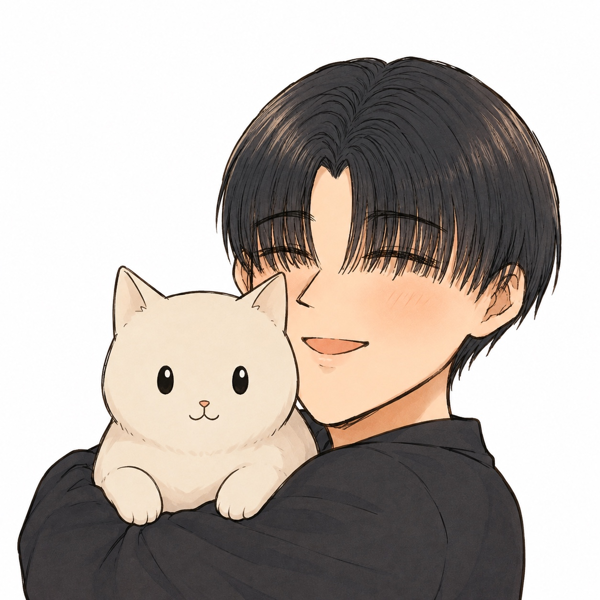

Profile（プロフィール）

| 氏名 | えすけ～ |
|---|---|
| 所属校 | 大阪公立大学工業高等専門学校 |
| 年齢 | 17歳 |
| コース | 2年 知能情報 Iコース |
| 趣味 | ホラーゲームの動画視聴やゲーム、アニメなどなど。 |
普通の高校生と変わらぬプログラミング知識しか持ってませんが、高専生らしいプログラミング知識や技術を身につけたいです。
Skills（現在の能力値）
Python
★★☆☆☆
C言語
★☆☆☆☆
GitHub
★☆☆☆☆
JavaScript
★☆☆☆☆